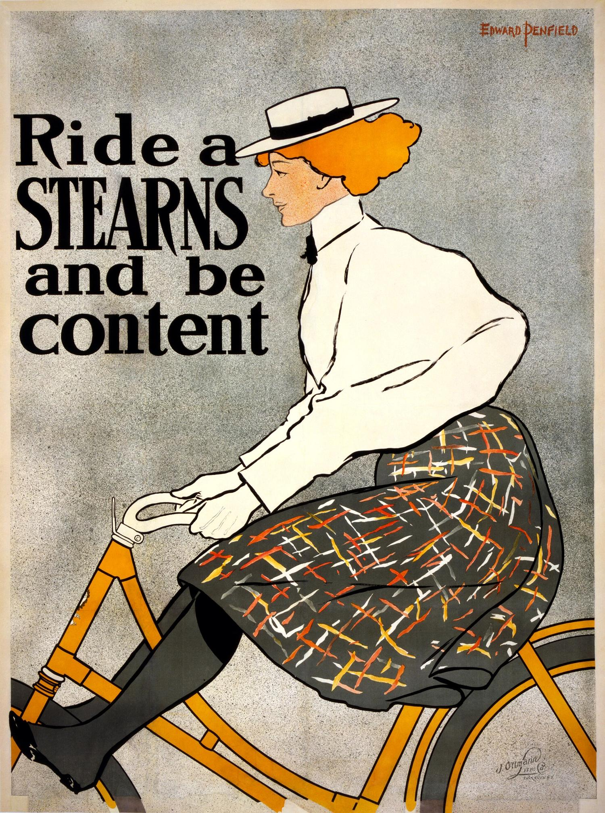
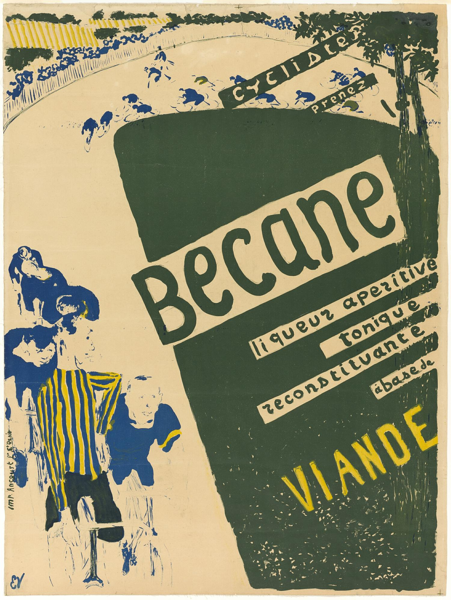
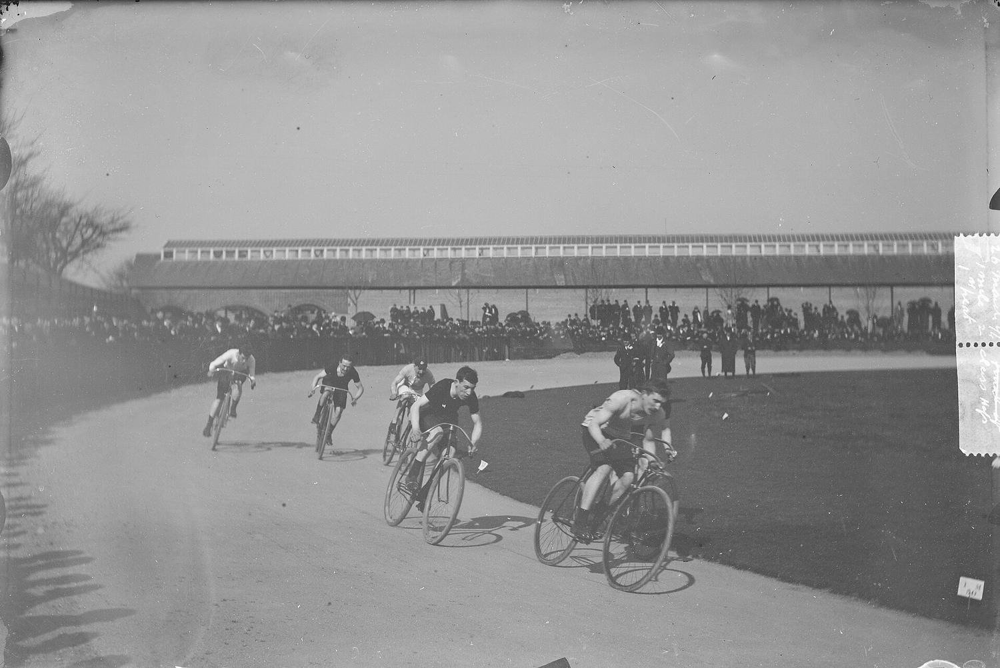
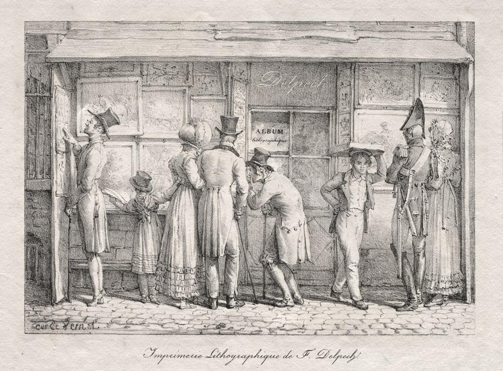
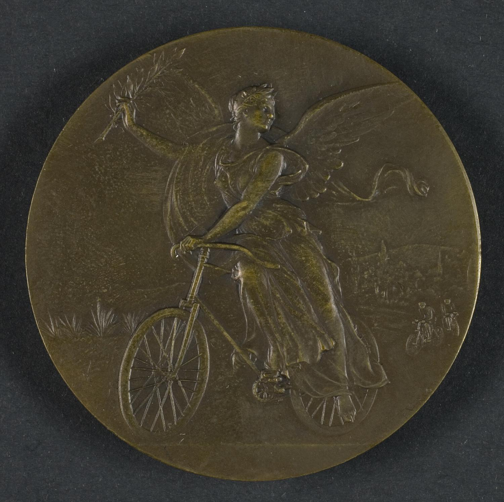
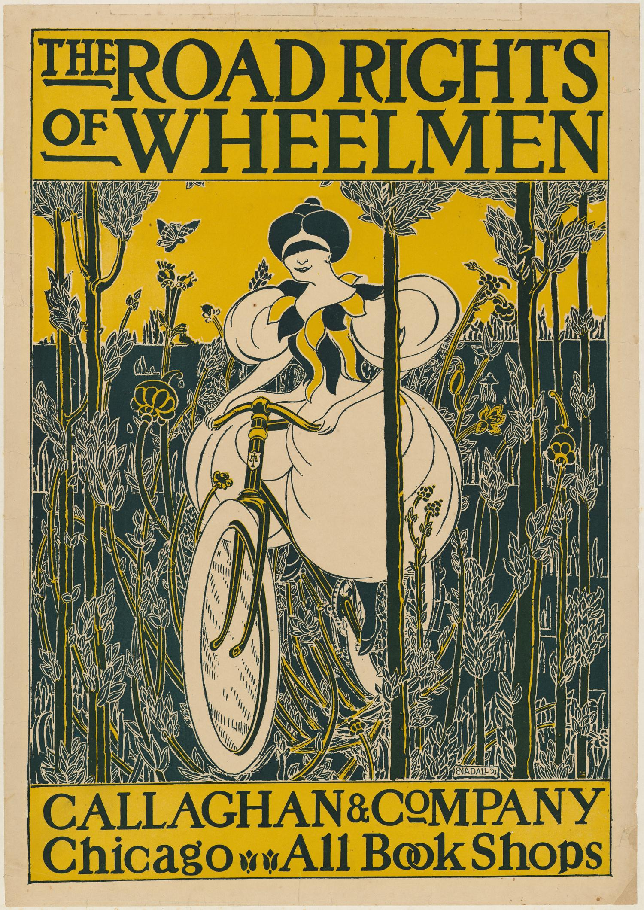
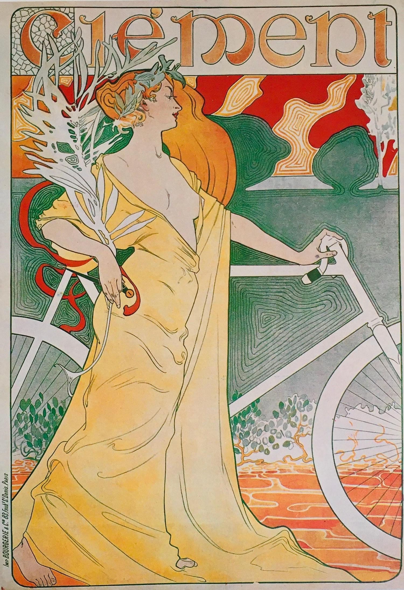

1896 Ride a Stearns Edward Penfield · Wikimedia Commons
Portafolio


Marca e interfaz para equipos que construyen con inteligencia artificial.
Hablemos de tu marcaRuido arriba, orden debajo
La superficie se ensucia. La retícula que hay debajo no se mueve.



De aquí vengo
Carteles de carrera impresos en piedra, cuando una marca tenía que funcionar pegada en un muro, mojada y a diez metros. Ninguna es mía: son de museo y están acreditadas. Es el oficio que hay detrás de lo que hago hoy en pantalla.
1894 Bécane Art Institute of Chicago
1818 Taller Delpech Carle Vernet · Cleveland Museum of Art

1895 Road Rights of Wheelmen Callaghan and Company · The Met
Quítale el ruido
Todo lo que hago tiene dos capas. Arriba la que se ve: grano, fotocopia, tinta mal registrada. Debajo la que aguanta: retícula, escala tipográfica, jerarquía. Mueve el control y mira qué queda cuando le quitas la suciedad.
Mitad y mitad

Sólo el sistemaSólo la superficie
Qué hago
Identidad de marca
- Concepto y territorio visual
- Logotipo y sistema de marca
- Tipografía, color y textura
- Manual de uso
- Kit de aplicaciones
Diseño de interfaz
- Landing pages y sitios
- Dashboards y producto
- Design system en Figma
- Componentes y estados
- Entrega lista para código
Experiencia de uso
- Flujos y arquitectura
- Wireframes
- Prototipos navegables
- Test con gente real
Dirección de arte
- Sistemas gráficos
- Campaña y piezas sociales
- Impresos y merch
- Carteles y jerseys de ciclismo
Entender
Llamada, contexto y objetivos. Salgo con un brief que los dos aprobamos.
Explorar
Territorios visuales y rutas. Elegimos dirección antes de gastar semanas.
Diseñar
Dos rondas de revisión acotadas. Nada de bucles infinitos.
Entregar
Archivos, guía de uso y acompañamiento para que tu equipo lo aplique bien.
Quién
Soy Felipe Saavedra. Diseño marcas e interfaces, y me interesa especialmente la gente que está construyendo producto con inteligencia artificial: tienen tecnología rara y casi siempre una marca que no está a la altura.
Me gusta el diseño que se nota hecho. Grano, fotocopia, capas fuera de registro. Pero el ruido es acabado, no excusa: debajo siempre hay retícula y una decisión que puedo defender. Si el proyecto pide limpio y suizo, va limpio y suizo.
Fuera del escritorio estoy sobre la bici, ruta y MTB. De ahí sale buena parte de lo que diseño por gusto: carteles de carrera, jerseys, cosas que se imprimen y se ensucian de verdad.
- Trabajo
- Diseñador independiente, 2026
- Antes
- Diseñador gráfico, 2023–2025
- Formación
- Diseño gráfico, 2019–2023
- Herramientas
- Figma, Illustrator, Photoshop, After Effects
- Idiomas
- Español nativo, inglés profesional
- Base
- Remoto, LATAM
Cuéntame qué construyes y en qué etapa va. Respondo en menos de 24 horas.
fsarmijo21@gmail.comRemoto · LATAM